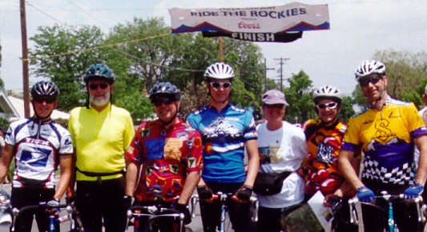

| The 2002 edition of Ride the
Rockies was presented by the Denver Post and Coors Beer on June 16th
through June 22nd. For details regarding the ride route and
mileage please see the Ride the
Rockies web site.
Known collectively as Team WIUS
(pronounced "why us"), we train and live near Madison,
Wisconsin. For two in our group, this would
be the ninth year in a row we have traveled to Colorado for a Rocky
Mountain bike ride. Everyone in our group of seven has
been on Ride the Rockies at least once before. You could say that
we thought we knew what to expect from this 7 day 489 mile ride. |
| |
 |
| We are (left to right)
David, Jack, Dan, Adam, Pat, Joe, and Evan. |
next page: Riding |